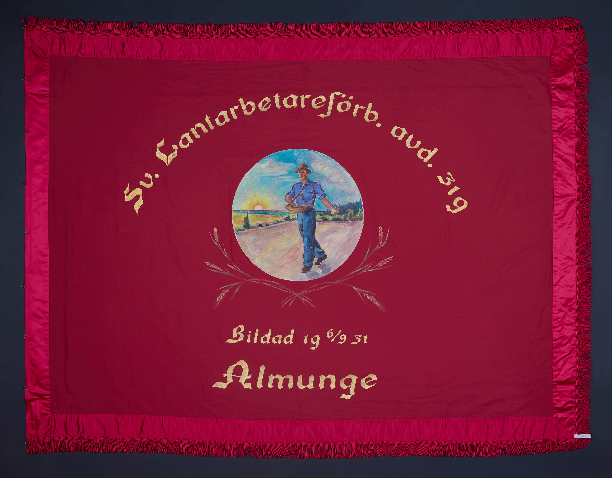
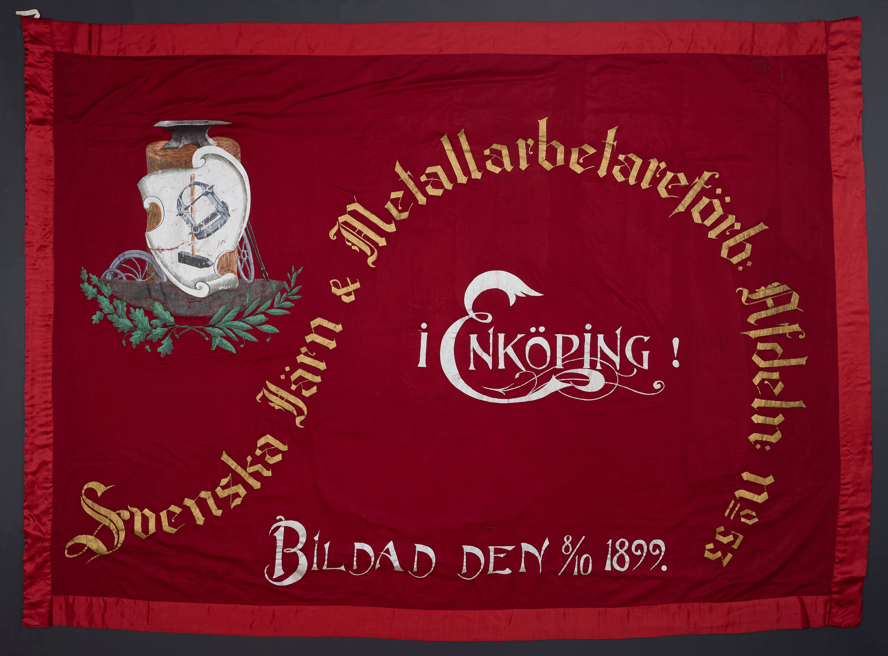
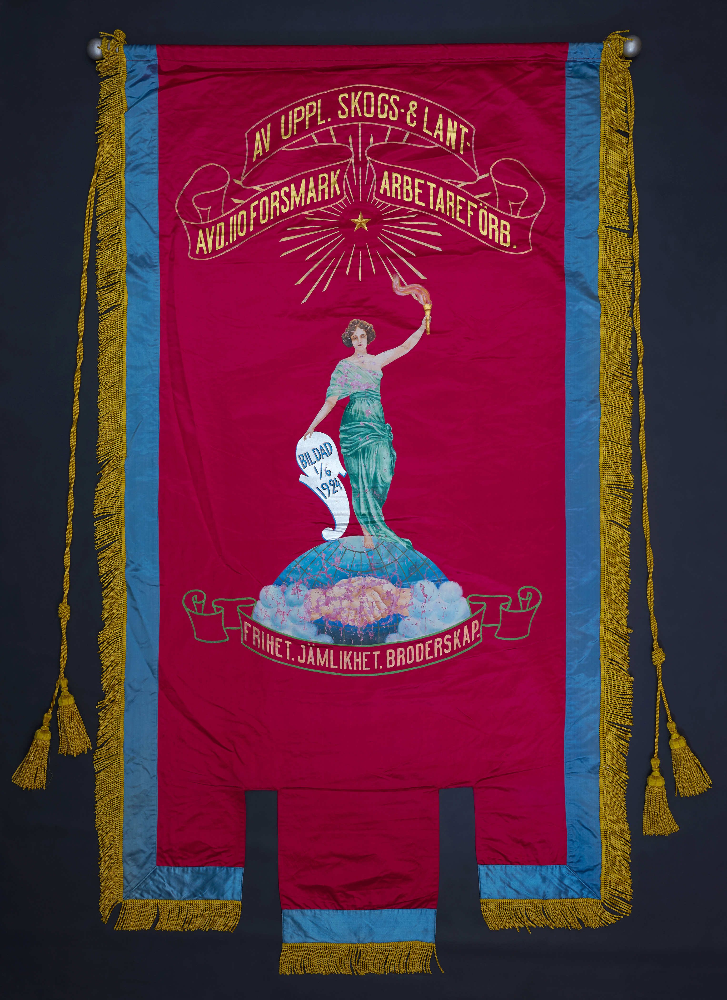
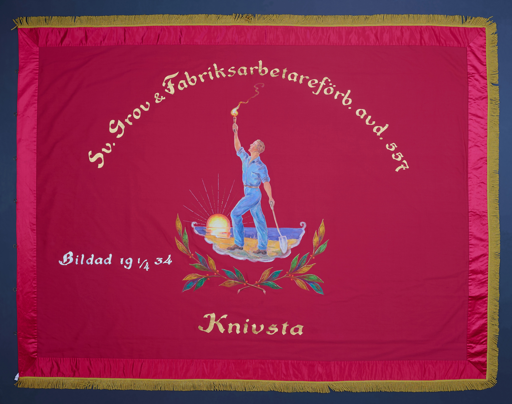
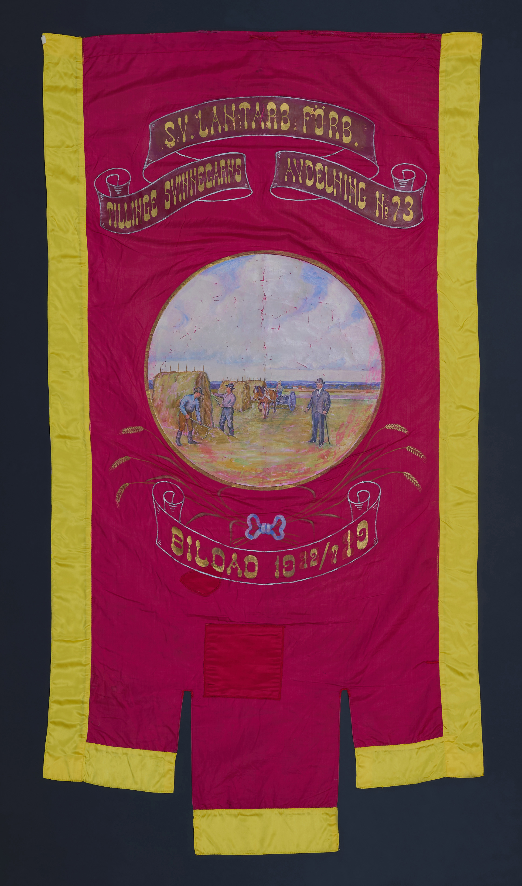
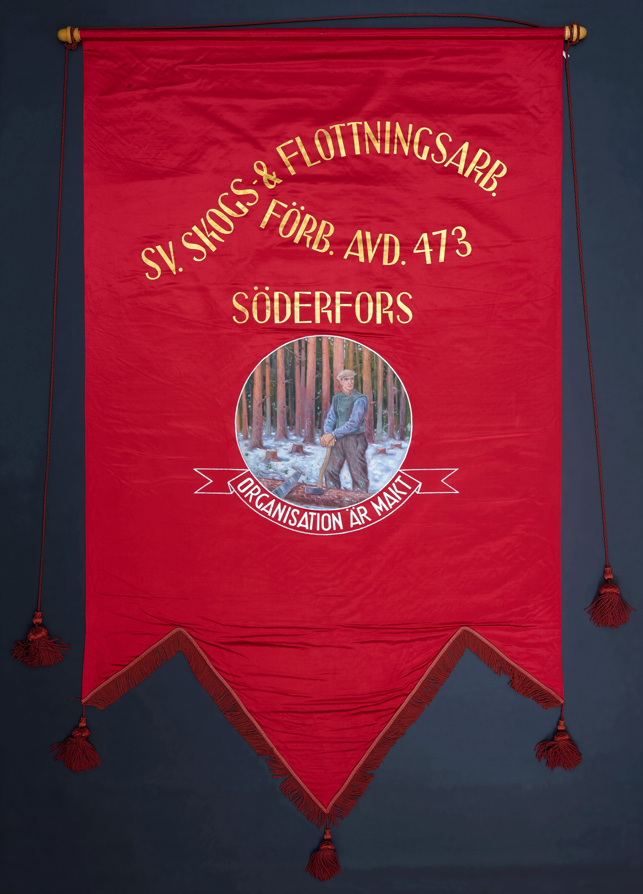
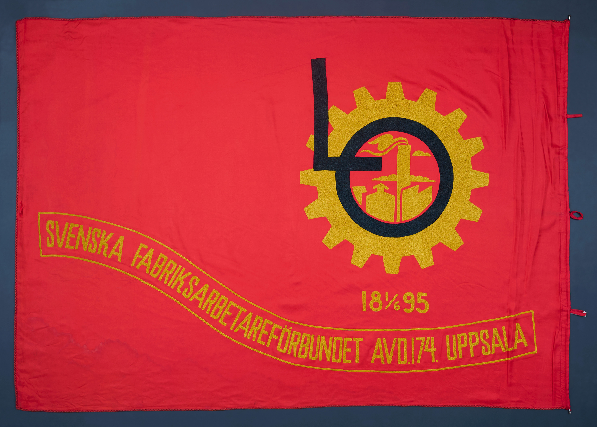
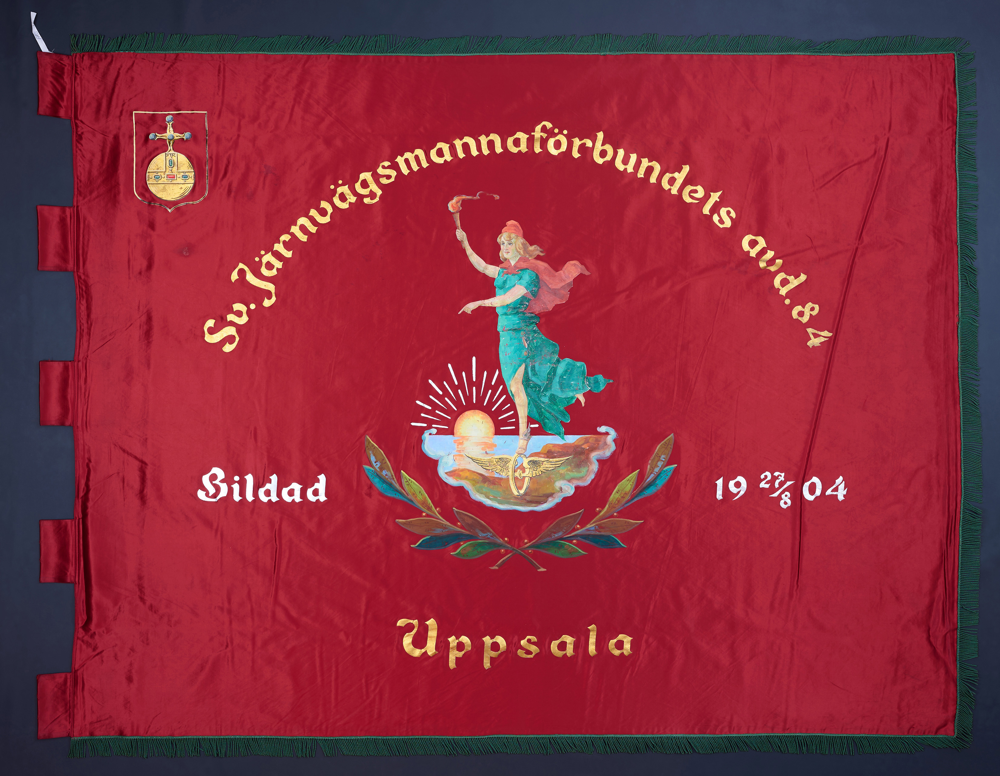
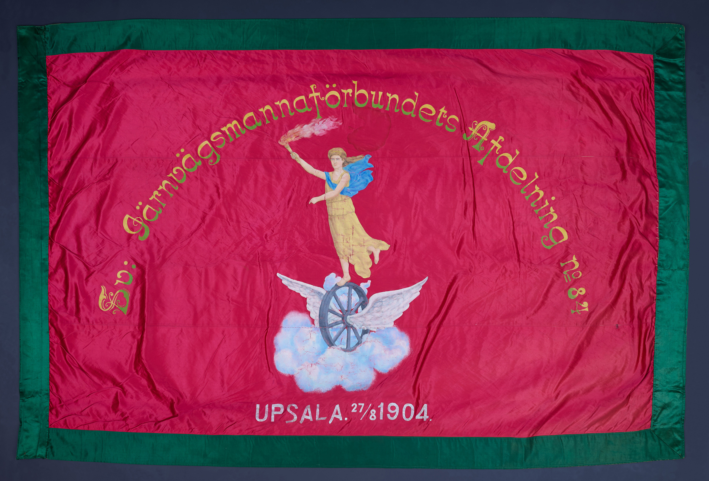

Lantarbetareförbundet avd 319 Almunge
Svenska lantarbetareförbundet var ett svenskt fackförbund inom LO som bildades 1908 och 1930 anslöt sig Upplands lantarbetareförbund. Förbundet upplöstes 2001 då det uppgick i Svenska kommunalarbetareförbundet och 2024 i Livsmedelsarbetareförbundet. Folkrörelsearkivet id:nr 327
Storlek: 191 x 149 cm Skapare: Okänd
Framsida
Text: Sv. Lantarbetareförbundet avd 319 Bildad 6/9 1931 Almunge
Symboler: Soluppgång, såningsman
Baksida
Text: Gör din plikt, kräv din rätt
Symboler: Handslag, facklor

Järn och Metallarbetareförbundet avd 53 Enköping
text text text text text text text text text text text text text text text text text text text text text Folkrörelsearkivet id:nr 291
Storlek: 224 x 159 cm Skapare: Johan Adolf Hellberg, 1908
Framsida
Text: Svenska Järn & Metallarbetareförb. Bildad den 8/10 1899. I Enköping!
Symboler: Emblem med verktyg, ekblad
Baksida
Text: Solidaritet vår styrka
Symboler: Marianne

Skogs- och lantarbetareförbundet avd 110 Forsmark
text text text text text text text text text text text text text text text text text text. Folkrörelsearkivet id:nr 348
Storlek: 111 x 209 cm Skapare: Okänd
Framsida
Text: Av Uppl. Skogs och Lant. Avd. 110 Forsmark Arbetareförb. Frihet. Jämlikhet. Broderskap.
Symboler: Marianne, stjärna, jordglob, fackla
Baksida
Text: Enighet ger styrka. Arbetets frukter till dem som arbeta!
Symboler: Upplandsvapen, plöjande bonde, hästar

Grov & Fabriksarbtareförbundet avd 557 Knivsta
text text text text text text text text text text text text text text text text text text. Folkrörelsearkivet id:nr 221
Storlek: 187 x 140 cm Skapare: Lindblads ateljé, Örebro, 1938
Framsida
Text: Sv. Grov & Fabriksarbtareförb. avd 557 Knivsta Bildad 1/4 1934
Symboler: Soluppgång, lagerranka, arbetare med spade, fackla
Baksida
Text: Upplysning är makt
Symboler: Symboler: Soluppång, lagerranka

Lantarbetareförbundet avd 73 Tillinge/Svinnegarn
text text text text text text text text text text text text text text text text text text. Folkrörelsearkivet id:nr 294
Storlek: 86 x 164 cm Skapare: Lindblads ateljé, Örebro
Framsida
Text: Sv Lantarb. Förb. Tillinge Svinnegarns avdelning Nr. 73 Bildad 19 12/7 10
Symboler: Lantarbetare, häst, slåttermaskin
Baksida
Text: Rättvisa frihet och bröd
Symboler: Lantarbetare, hästar, slåttermaskin

Skogs- och flottningsarbetareförbundet avd 473
text text text text text text text text text text text text text text text text text text. Folkrörelsearkivet id:nr 243
Storlek: 118 x 194 cm Skapare: Okänd
Framsida
Text: Sv Skogs- och flottningsarb.förb. avd. 473 Söderfors Organisation är makt
Symboler: Skogsarbetare
Baksida
Text: Sv Skogs- och flottningsarbtareförb. 473 Bildad 1/5 1929 Enighet ger styrka
Symboler: Handslag, jordglob

Fabriksarbetareförbundet avd 174
text text text text text text text text text text text text text text text text text text. Folkrörelsearkivet id:nr 236
Storlek: 197 x 137 cm Skapare: Okänd, 1955
Framsida
Text: Svenska Fabriksarbetareförbundet avd. 174 Uppsala 1/6 1895
Symboler: Kugghjul LO
Baksida
Text: Svenska fabriksarbetareförbundt avd. 174 Uppsala 1/6 1895 />
Symboler: Kugghjul LO

Järnvägsmannaförbundet avd 84
text text text text text text text text text text text text text text text text text text. Folkrörelsearkivet id:nr 72
Storlek: 190 x 148 cm Skapare: Lindblads ateljé, Örebro, 1943
Framsida
Text: Sv. Järnvägsmannaförbundets avd. 84 Uppsala Bildad 19 27/8 04
Symboler: Marianne, soluppgång, bevingat hjul
Baksida
Text: Frihet Demokrati Ansvar
Symboler: Handslag, fackla, sol

Järnvägsmannaförbundet avd 84
text text text text text text text text text text text text text text text text text text. Folkrörelsearkivet id:nr 73
Storlek: 207 x 132 cm Skapare: Lindblads ateljé, Örebro
Framsida
Text: Sv. Järnvägsmannaförbundet Afdelning no. 84
Uppsala 27/8 1904
Symboler: Marianne, bevingat hjul
Baksida
Text: Frihet! Jämlikhet! Broderskap!
Symboler: Handslag, jordklot, vapensköld